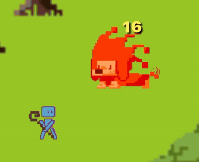
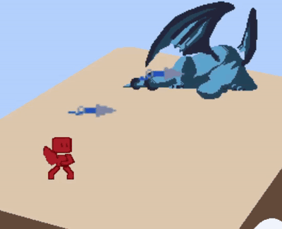

ゲーミフィケーション
「ゲーミフィケーション・フィットネス」とは？
実際の運動に、ステータス、成長、目標、チャレンジ、報酬などゲームのようなフィードバックを加える考え方です。
便利なフィットネス機能を置き換えるものではない
ゲーム要素は、その土台となるフィットネス機能が使いやすくて初めて役立ちます。ProxyFitはワークアウトトラッカーを中心にし、記録した活動の周りに成長要素を組み込んでいます。
ProxyFitではどう使う？
実際のワークアウトを記録すると、キャラクターのXPとステータスポイントを獲得します。筋力・持久力・スピードを育て、自動スキルとタップスキルで続いていくステージに挑戦できます。最高クリア記録は毎週リセットされません。
ほかの画面を使っている間も自動バトルは進みます。アプリを離れたあとは、保存した自動設定で最大12時間分の進行を計算します。運動による育成が、冒険を進める力になります。放置バトルの詳しい使い方 →




どんな人向け？
ゲームが好きな人はもちろん、普通のフィットネス記録は便利だと感じつつ、もう少し「成長している感覚」がほしい人にも向いています。